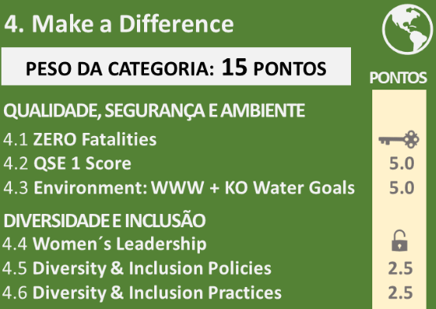
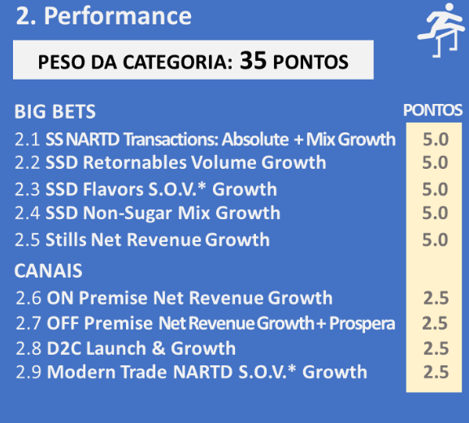
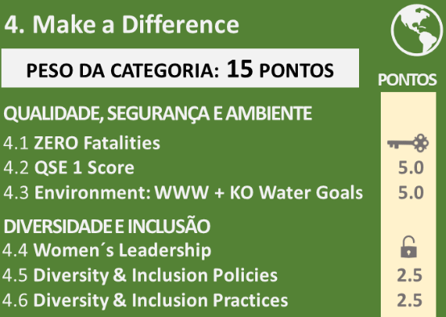
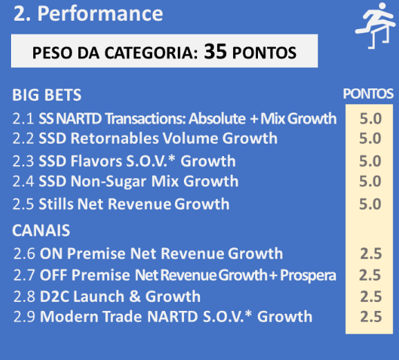

A América Latina representa para TCCC um conjunto de mercados muito significativos e de importante potencial para o crescimento dos nossos negócios...
-

39
mercados*
-

+ 500 MM
consumidores
-

47 Bn
transacciones / año
-

50%+
NARTD share
#1 en SSDs
#2 en Hydration
#1 en Jugos
-

~200 K
Colaboradores en el Sistema KO LatAm
-

50+
bottling parners
180 +
plantas productivas
-

23%
de las ganancias
26%
del volumen global
-

~ 4.8 MM
clientes servidos
…e ainda que existam características que os diferenciam, há, por
outro lado,
muito mais similaridades nos fundamentos destes mercados.


 


